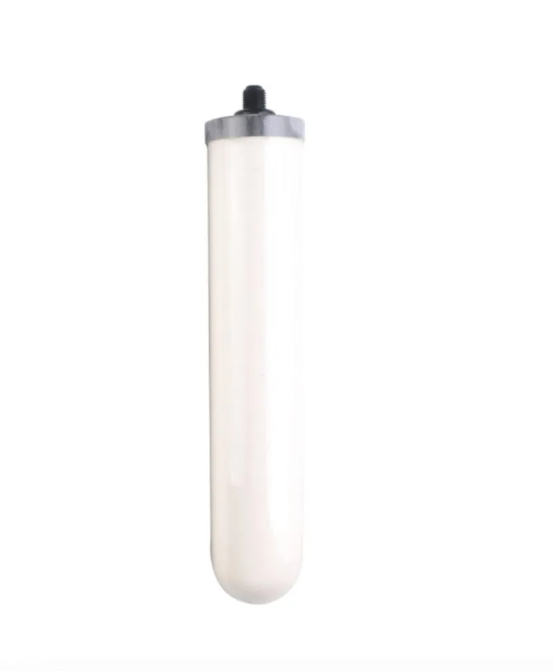

Cartuccia filtrante CTO
The CTO coconut shell carbon block filter is designed for chlorine, taste, odor and fine particle reduction in residential and commercial water systems. The compressed carbon block uses selected coconut...
Invia richiesta
Cartuccia filtrante (Multi-Stage Filter Cartridge Combination) è un prodotto della categoria Cartuccia Filtro per Filter Cartridge, con Stages: 3–5; Combination: Custom. Yuchen Water supporta private label, etichette filtro, cartoni export e configurazione OEM/ODM in base al progetto.
| OEM/ODM | Cartuccia filtrante |
|---|---|
| PP / CTO / GAC / UF / RO | OEM |
| 10 / 20 / 30 / 40 inch | OEM |
| μm / GPD / LPH | OEM |
| FOB / CIF / DDP | ✓ |
| ISO 9001 / CE / SGS | ✓ |
| MOQ | OEM |
← Torna a tutti i prodotti Prodotti
Prodotti selezionati possono essere forniti o testati secondo NSF/ANSI 42, 53 e 58. Documenti ISO 9001, CE, SGS e relativi Halal sono disponibili su richiesta.
Il MOQ per le cartucce standard da 10" PP, CTO e GAC parte da 1.000 pezzi per SKU per gli articoli in stock, 3.000 pezzi per le guaine stampate OEM e 5.000 pezzi per gli stampaggi ODM completamente personalizzati (tappo terminale privato, O-ring personalizzato, pellicola termoretraibile con marchio). Per le membrane UF e le membrane RO 75/100/400 GPD il MOQ è solitamente di 500 pezzi. Per gli erogatori a parete il MOQ è di 100 unità. Ordini di prova più piccoli sono negoziabili per i nuovi distributori.
Il nostro centro di produzione si trova a Yuanhua Town, Haining City, Zhejiang Province, Cina — a circa 90 minuti di auto dall'aeroporto di Shanghai Hongqiao (SHA) e dall'aeroporto di Hangzhou Xiaoshan (HGH). La struttura di oltre 20.000 m² ospita linee di estrusione PP melt-blown dedicate, presse per CTO carbon block sinterizzato, camere bianche per l'assemblaggio di membrane UF/RO e linee di assemblaggio SMT per gli erogatori. Accogliamo visite programmate dei compratori, ispezioni di terze parti (SGS, BV, TÜV) e audit di qualificazione OEM.
Le cartucce standard PP, CTO, GAC e T33 nei colori a magazzino vengono spedite entro 7–10 giorni. Cartucce a marchio privato OEM con stampa personalizzata: 20–25 giorni dall'approvazione della grafica. Elementi a membrana RO/UF: 15–20 giorni. Erogatori a parete e da tavolo: 30–45 giorni a seconda della personalizzazione. Il carico di un container è tipicamente di 1 × 20'GP (≈ 80.000 cartucce) o 1 × 40'HQ (≈ 200 erogatori). Sono disponibili i termini FOB Shanghai o Ningbo; CIF, CFR e DDP.
Sì. Offriamo una gamma completa di membrane per osmosi inversa: 50 GPD, 75 GPD, 100 GPD, 200 GPD, 400 GPD, 600 GPD per sistemi residenziali sottolavello, oltre a elementi ad alta reiezione da 300 GPD, 400 GPD e 600 GPD per erogatori d'acqua commerciali leggeri. Elementi industriali 4040 e 8040 (equivalenti a BW30, SW30) sono disponibili per impianti di trattamento acque, dialisi, risciacquo semiconduttori e applicazioni farmaceutiche. Tasso di reiezione salina ≥ 96–99%.
I filtri per sedimenti PP melt-blown utilizzano fibre di polipropilene termosaldate per rimuovere i contaminanti particolati (ruggine, sabbia, limo) da 0,5 a 50 microns. I filtri a blocco di carbone sinterizzato CTO (Chlorine, Taste & Odor) utilizzano carbone attivo compresso di guscio di cocco o a base di carbone per rimuovere il cloro libero, le clorammine, i COV, i pesticidi e migliorare il gusto — tipicamente da 5 µm o 10 µm. I filtri a carbone attivo granulare GAC utilizzano granuli di carbone sfusi per un tempo di contatto superiore e l'adsorbimento del cloro, e sono spesso il secondo stadio nei sistemi RO a 5 stadi. Produciamo tutti e tre su scala industriale con piena tracciabilità.
The CTO coconut shell carbon block filter is designed for chlorine, taste, odor and fine particle reduction in residential and commercial water systems. The compressed carbon block uses selected coconut...
Invia richiesta
High-quality ceramic filter cartridge for removing fine particles and bacteria. Wholesale factory supply, customizable for OEM/ODM. Selected NSF/ANSI test options and ISO/CE/SGS documents are available on...
Invia richiesta
Medium-sized water filter cartridge featuring a copper connector for robust installation and performance. Wholesale factory supply, customizable for OEM/ODM. Selected NSF/ANSI test options and ISO/CE/SGS...
Invia richiesta
The PP melt blown sediment filter cartridge is a cost-efficient prefilter for removing sand, rust, silt and suspended particles before carbon, UF or RO stages. It is made from thermally bonded polypropylene...
Invia richiesta